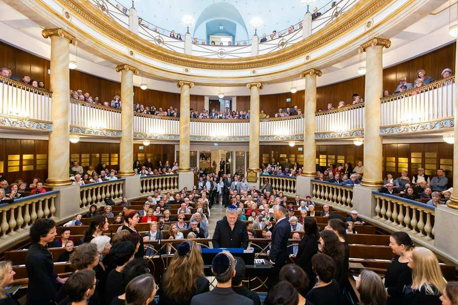

לתרום
החיים היהודיים צריכים חברים ותומכים
רבים מהשירותים של קהילת ישראל אפשריים רק באמצעות תרומות. זה כולל תרומות מאנשים פרטיים וכן מחברות וקרנות.
הנתינה נטועה עמוק ביהדות. צדקה (צדק) היא הגישה היהודית לעוני. אבל לא מדובר רק ברחמים, אלא גם בפנייה לאחריות חברתית. חכמינו התלמוד רואים בחלוקת הסחורות הבלתי שוויונית ולכן הלא הוגנת בכל החברות ובכל עת הזדמנות לתרום לאיזון חברתי על ידי קיום מצוות תורה. זו האחריות החברתית של מי שיש לו הזדמנויות כלכליות לעומת מי שאין לו. זה צדקה! המושג "תיקון עולם" (שיפור העולם) הוא הנושא המרכזי של היהדות.
צוות גיוס התרומות Israelitische Kultusgemeinde Wien (הקהילה היהודית של וינה) סביב איזבלה מרטנס (ראש המחלקה) מעביר את הרעיון הזה לתומכים ובכך גם את שמחת התרומה. גיוס כספים בונה גשר בין אנשים ומחבר אותם אחד עם השני. אנא צור איתנו קשר, נשמח להכיר אותך.
איזבלה מרטנס, ראש אגף גיוס תרומות
+43/664 888 516 04
TMICHA - מועדון חברתי Israelitische Kultusgemeinde Wien (הקהילה היהודית של וינה)
TMICHA היא העמותה החברתית Israelitische Kultusgemeinde Wien (הקהילה היהודית של וינה) לתמוך בנזקקים. אנו רואים את חובתנו לתמוך בילדים ובצעירים במצוקה ובמשפחותיהם. אנו מטפלים גם באנשים מבוגרים ובאנשים הנזקקים עקב מחלה.
צרו קשר עוד היום ישירות בכתובת:
ה-Israelitische Kultusgemeinde Wien (הקהילה היהודית של וינה) היא קהילה מאוחדת של כל ענפי היהדות המיוצגים בוינה. היא משמרת את המורשת היהודית ומעצבת את העתיד היהודי באוסטריה ומפעילה תשתית מגוונת. על כך היא נהנית מהמוניטין הגבוה ביותר ברחבי העולם.
צרו קשר עוד היום ישירות בכתובת:
חינוך וöגלגל
קדם את העתיד היהודי על ידי מתן מלגות חברתיות לתלמידי בית ספר בין בית הספר של פרז צ'אג'ה, בית הספר הציבורי המנוהל על ידי IKG. כ-60 מלגות חברתיות בסך 4,860 יורו כל אחת מוענקות מדי שנה באמצעות ספונסרים של מלגות מהעסקים והתעשייה, כך שכל ילד יוכל לקבל את החינוך הטוב ביותר, ללא קשר למצבם הכלכלי של ההורים.
תמכו בחיי היהודים
על מנת לשמר את אוצרות המורשת היהודית הרבים, נדרשת תמיכתם של פטרונים, קרנות וחברות.
נותני החסות מקדמים גם אירועי תרבות יהודית ובכך חיים יהודיים, כמו "היום הפתוח" בבית הכנסת המרכזיוני, פסטיבל התרבות היהודית או קונצרט החזן.
שנה נקודות מבט
תחת המוטו "היכרות עם היהדות משנה נקודות מבט", העובדים שלכם יכולים לבקר בבית הכנסת שלנו בסייטנסטטנגאסה. ההשתתפות מאפשרת שינוי נקודת מבט. ביקור במרכז רוחני זה נועד לעורר רפלקציה ולשמש לשבירת דעות קדומות ולפתור אי הבנות. מעורבות ארגונית מציעה הגברת מיומנויות חברתיות בהתמודדות עם אנטישמיות וגם תורמת תרומה חשובה ללכידות הצוות.

על מנת לתחזק בתי כנסת, לשפץ בתי קברות, להבטיח חינוך יהודי ולאפשר תרבות וחיים יהודיים, יש צורך במיוחד בתמיכת תורמים ונותני חסות.
שלום חברים – חוג החברים של IKG
מעגל החברים Israelitische Kultusgemeinde Wien (הקהילה היהודית של וינה) מהעסקים והתעשייה מקדם את החיים היהודיים במגוון דרכים. מחינוך יהודי לתרבות ועבודה נגד אנטישמיות ועד לתמיכה הקשורה למגיפה, חברינו תומכים בנו בנדיבות. הם הערובה לחיים יהודיים תוססים באוסטריה ולכך שהקהילה שלנו נהנית ממוניטין עולמי. אנו מודים לך מעומק הלב!
חשבון תרומה:
קהילת תרבות ישראלית
IBAN AT77 1400 0020 1072 4000
BIC BAWAATWW